Instalação
O JJ Integration é uma aplicação inteligente desenvolvida pela JJ Consulting para atender as diferentes necessidades de integração entre sistemas. Sua instalação é rápida e pode ser executada por qualquer pessoa com noções básicas no uso de computadores. A seguir, detalhamos o passo-a-passo de instalação da ferramenta.
Requisitos Mínimos
A ferramenta JJ Integration pode ser executada tanto por uma máquina pessoal (PC ou Notebook) quanto por um servidor, esta é uma variável que depende da necessidade de disponibilidade de aplicação. Antes de prosseguir com a instalação verifique os requisitos básicos exigidos pela ferramenta.
| Requerimentos do Sistema - Client | |
|---|---|
| Sistemas Operacionais Suportados | Windows Server 2012+, Windows Vista(7/8/10), Windows XP, Windows 10, Mac e Linux. |
| Processador | 800Mhz Pentium (Mínimo) - 1.2Ghz Dual Core ou equivalente (Recomendado). |
| Memória RAM | 4GB (Mínimo) - 8GB (Recomendado). |
| Disco Rígido(HD) | 200Mb disponíveis em disco. |
| Driver de CD ou DVD | Não necessário. |
| Tela | Resolução 800x600, 256 cores (Mínimo) - Resolução 1024x768 e 32-bits (Recomendado). |
| Requerimentos do Sistema - Server | |
|---|---|
| Sistemas Operacionais Suportados | Windows Server 2012+, Windows Vista(7/8/10), Windows XP, Windows 10, Mac e Linux. |
| Processador | 800Mhz Pentium (Mínimo) - 1.2Ghz Dual Core ou equivalente (Recomendado). |
| Memória RAM | 4GB (Mínimo) - 8GB (Recomendado). |
| Disco Rígido(HD) | 200Mb disponíveis em disco. |
| Driver de CD ou DVD | Não necessário. |
Além disto, o ambiente que hospedará o JJ Integration deve possuir acesso à internet. Caso exista proxy na arquitetura da rede, o mesmo deverá ser configurado na máquina onde se encontra a aplicação.
Instalação
Para acessar o repositório Git do JJIntegration e obter os arquivos do cliente e do servidor, siga as etapas abaixo:
Acesse o Git do JJIntegration.
Localize os arquivos do client e do servidor.
Faça o download dos arquivos, que podem estar disponíveis nos formatos .rar ou .zip.
Crie uma pasta para armazenar os arquivos baixados.
Mova os arquivos .rar ou .zip para a pasta criada.
Extraia os arquivos para obter acesso ao conteúdo.
As imagens abaixo demonstram visualmente as etapas descritas acima:
Após acessar o Git do JJIntegration, faça o download dos arquivos do cliente e do servidor.
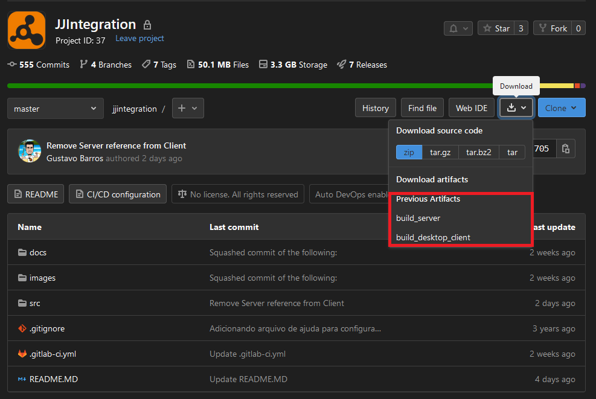
Em seguida, coloque os arquivos .rar ou .zip em uma pasta.
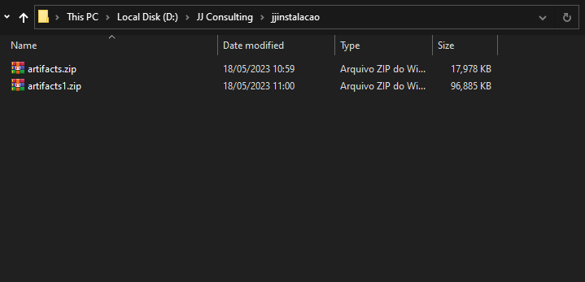
Por fim, extraia os arquivos para utilizar o conteúdo obtido.
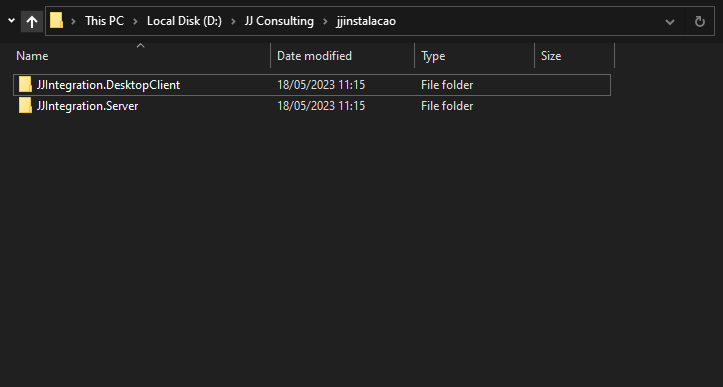
Configurando o JJ Integration
Depois de realizar as etapas anteriores, você pode prosseguir para verificar a configuração do arquivo JSON localizado na pasta do servidor. Para fazer isso, siga as instruções abaixo:
Acesse a pasta onde os arquivos do servidor foram extraídos.
Localize o arquivo JSON relevante.
Abra o arquivo JSON utilizando um editor de texto ou um software adequado.
Analise as configurações presentes no arquivo JSON para verificar sua configuração.
Certifique-se de examinar cuidadosamente as informações e parâmetros definidos no arquivo JSON para garantir que estejam corretos e atendam às suas necessidades.
| Configuração Padrão | |
|---|---|
| Servidor | localhost |
| Porta | 9092 |
| Nome do Serviço | .JJ4 |
Iniciando o Serviço de Integração
Para acessar o Prompt de Comando ou Terminal no Windows ou em outros sistemas operacionais, siga estas etapas:
Windows:
Pressione a tecla Windows.
Digite "cmd" (sem aspas)
Clique com o botão direito do mouse no aplicativo "Prompt de Comando" que aparece nos resultados da pesquisa.
No menu de contexto, escolha "Executar como administrador". Isso abrirá o Prompt de Comando com privilégios de administrador.
Mac OS:
Abra o Finder.
Navegue até a pasta Applications.
Abra a pasta Utilities.
Procure pelo aplicativo chamado Terminal e clique duas vezes nele. Isso abrirá o Terminal.
Linux (Ubuntu, Debian, etc.):
Pressione Ctrl + Alt + T simultaneamente. Isso abrirá o Terminal.
Linux (Fedora, CentOS, etc.):
Clique no ícone do menu Applications na barra superior.
Navegue até a categoria System Tools.
Clique em Terminal. Isso abrirá o Terminal.
Através do Prompt de Comando ou Terminal, você poderá executar comandos e interagir com o sistema operacional utilizando a linha de comando.
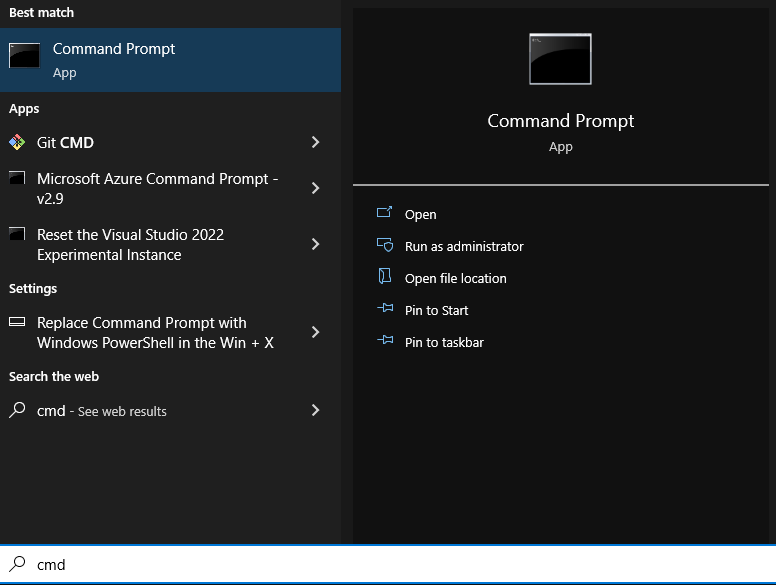
Use o comando cd seguido do caminho para a pasta do Server.
Para ir para uma pasta dentro do mesmo diretório, você pode simplesmente digitar o nome da pasta:
cd nome-da-pastaPara ir para uma pasta em um diretório diferente, forneça o caminho completo ou o caminho relativo:
cd C:\caminho\para\a\pastacd ..\caminho\para\a\pasta
Pressione Enter para executar o comando. O Prompt de Comando mudará para a pasta especificada.
Tenha em mente que o comando cd é usado para alterar o diretório atual apenas dentro do Prompt de Comando. Ele não afeta o diretório atual do sistema operacional como um todo.
Você pode usar o comando cd sem argumentos para retornar ao diretório raiz do disco atual ou usar cd.. para voltar ao diretório pai.
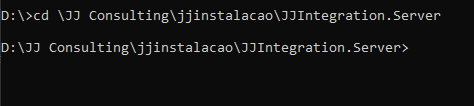
Acesse o menu console do JJ Integration, em seguida, execute o comando ‘.\JJintegration.server -h’ para informações.
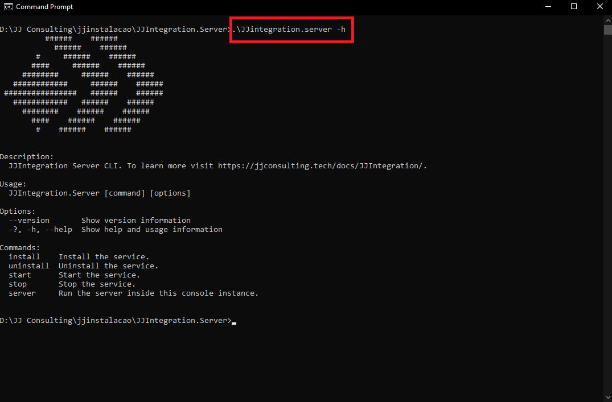
| Comandos | Descrição |
|---|---|
- install |
Instala o aplicativo como serviço e inicializa automaticamente. |
- uninstall |
Desinstala o serviço. |
- start |
Inicia o serviço. |
- stop |
Para o serviço. |
- server |
Inicia o serviço de integração nesta instância do console |
- help |
Ajuda. |
Execute o comando ‘.\JJintegration.server’ para iniciar o serviço de integração do aplicativo.
Ao final do processamento, será exibido uma mensagem de sucesso de execução, indicando a porta utilizada pelo serviço.
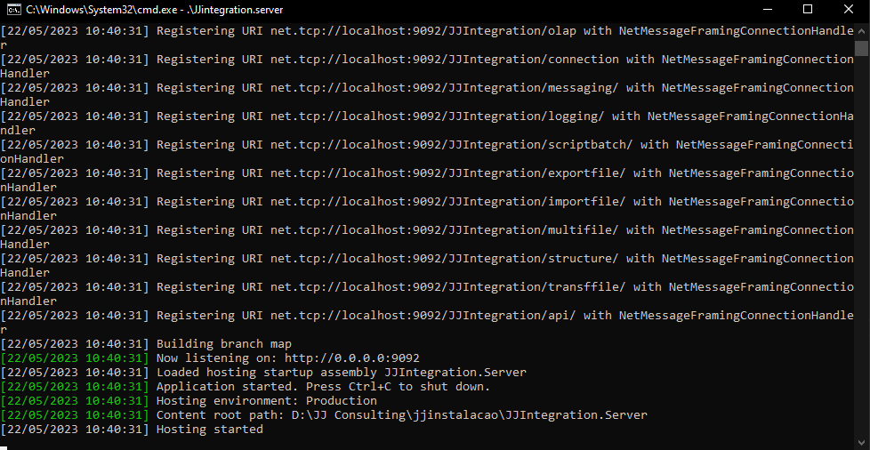
Lembre-se sempre de executar os comandos dentro do JJ Integration com o prefixo correto, do contrário o console não reconhecerá e nem executará o comando.
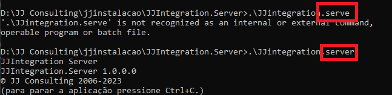
Iniciando a Aplicação de Integração
Acesse a pasta onde os arquivos do client foram extraídos.
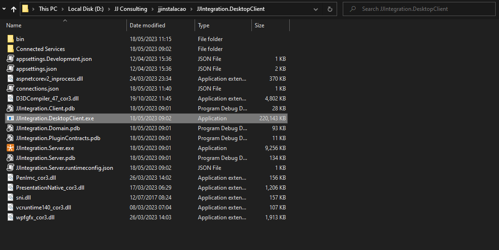
Para executar o aplicativo, clique no arquivo executável JJIntegrationDesktopClient.exe.
Atenção: Certifique-se de que o servidor esteja sendo executado antes de abrir o cliente.
Ao prosseguir, será exibida a tela que contém os ambientes de integração configurados.
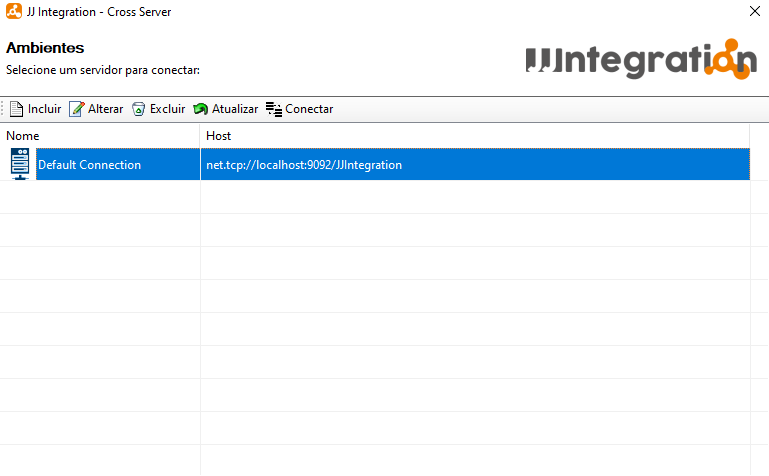
Selecione o botão Incluir  para incluir uma nova conexão. Em seguida, será exibida uma tela de configuração de conexão na qual você deve preencher as Configurações de Acesso, incluindo Nome, Servidor, Porta, Usuário e Senha. Após preencher os campos necessários, clique no botão 'Ok' para concluir o processo.
para incluir uma nova conexão. Em seguida, será exibida uma tela de configuração de conexão na qual você deve preencher as Configurações de Acesso, incluindo Nome, Servidor, Porta, Usuário e Senha. Após preencher os campos necessários, clique no botão 'Ok' para concluir o processo.
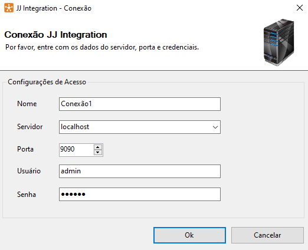
Para alterar dados de uma conexão selecione a conexão desejada e selecione o botão Alterar  para alterar uma conexão. Em seguida, será exibida uma tela de configuração de conexão na qual você deve alterar as Configurações de Acesso, incluindo Nome, Servidor, Porta, Usuário e Senha. Após preencher os campos necessários, clique no botão 'Ok' para concluir o processo.
para alterar uma conexão. Em seguida, será exibida uma tela de configuração de conexão na qual você deve alterar as Configurações de Acesso, incluindo Nome, Servidor, Porta, Usuário e Senha. Após preencher os campos necessários, clique no botão 'Ok' para concluir o processo.
Para excluir uma conexão selecione a conexão desejada e selecione o botão Excluir  . Após selecionar o sistema irá exibir uma mensagem de confirmação, selecione botão "Ok" para confirmar e excluir.
. Após selecionar o sistema irá exibir uma mensagem de confirmação, selecione botão "Ok" para confirmar e excluir.
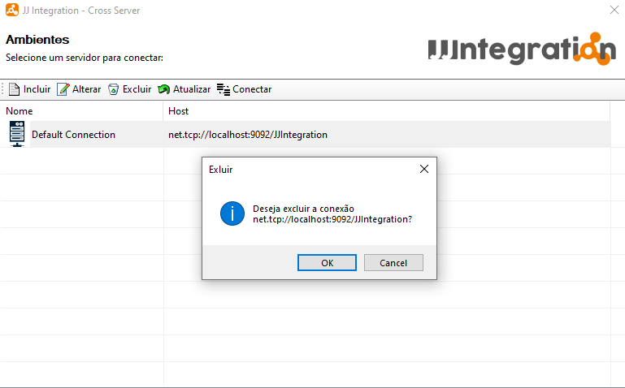
Para atualizar a lista de conexões selecione o botão Atualizar  , após selecionar o sistema irá atualizar a lista sendo possível dar continuidade nas atividades normalmente.
, após selecionar o sistema irá atualizar a lista sendo possível dar continuidade nas atividades normalmente.
Para conectar-se em uma conexão selecione a conexão desejada e selecione o botão Conectar . Após selecionar o sistema irá exibir uma mensagem de conexão.
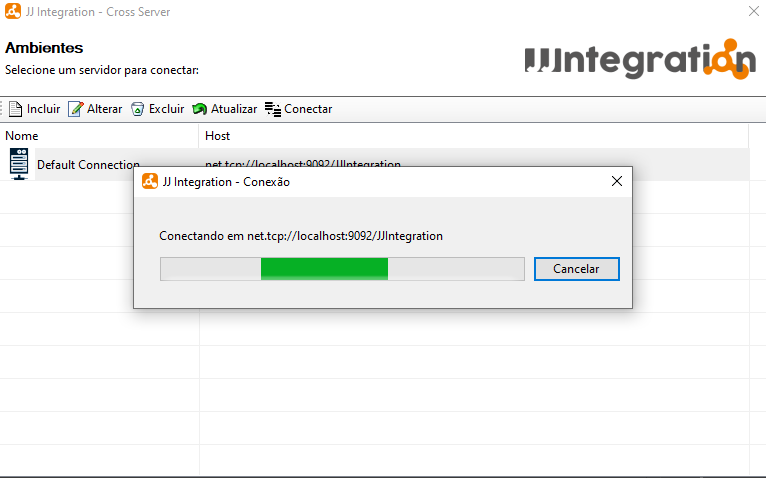
Após isso, o sistema irá exibir a tela inicial do JJIntegration.
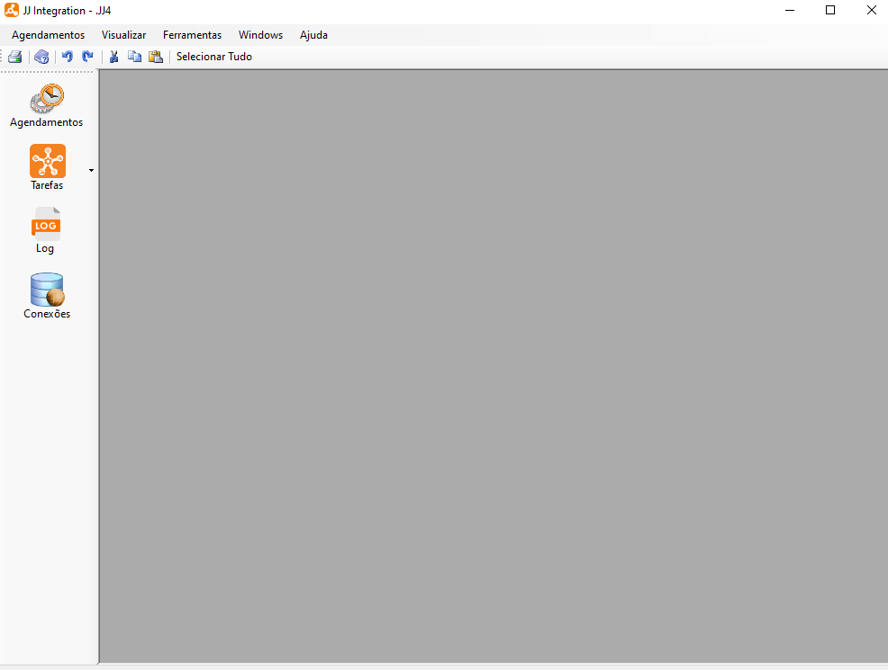